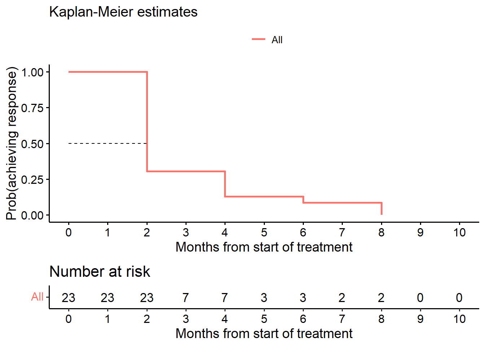
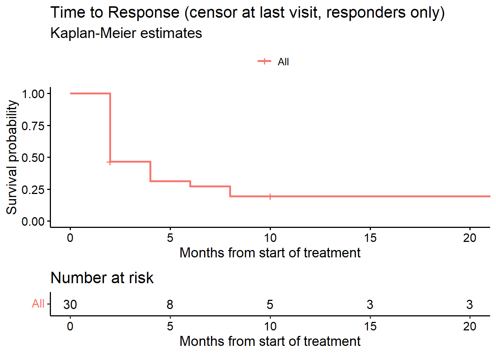

# --------------------------------------------------------------
# Packages
# --------------------------------------------------------------
packages <- c("survival", "cmprsk", "survminer", "msm", "mstate",
"tidyverse","Hmisc", "gt", "survRM2", "PBIR",
"gtsummary", "labelled", "swimplot", "ggplot2")
for (i in 1:length(packages)){library(packages[i], character.only = TRUE)}Duration of and time to response in oncology clinical trials from the perspective of the estimand framework
Code accompanying the paper: Case Study in Mantle Cell Lymphoma (Section 4)
1 Background
Code to illustrate Mantle Cell Lymphoma case study in Section 4 of the paper Weber et al. (2023+) written by the duration of response task force of the oncology estimand WG.
2 Purpose of this document
This R markdown file provides easy accessible code to reproduce computations in the paper. The github repository where this document is hosted is available here.
3 Setup
3.1 Packages
3.2 Get data
The source data provide the response status at time points \(C_2, \ldots, C_{22}\). The data set has no deaths. For assessing time to response (TTR), duration of response (DOR), or overall response rate (ORR) deaths are handled in the same way as progression. The dataset also has no data on intercurrent events such as e.g. start of new therapy. Thus, we assume none occurred. A treatment cycle has 28 days.
# --------------------------------------------------------------
# Data
# --------------------------------------------------------------
# Reading response assessments
dat <- read_csv("Case_study.csv", show_col_types = FALSE)
# Reading start of new therapies
# New antineoplastic therapies are not recorded after documentation of progression.
# After start of new antineoplastic therapies no response assessment is performed.
anp <- read_csv("Case_study_ANP.csv", show_col_types = FALSE)
# Source data
gt(dat) %>%
tab_header(title = "Listing: Responses by cycle") %>%
tab_style(
style = list(cell_text(weight = "bold")),
locations = cells_title()) %>%
tab_style(
style = list(cell_text(weight = "bold")),
locations = cells_column_labels())| Listing: Responses by cycle | |||||||||
| ID | C2 | C4 | C6 | C8 | C10 | C13 | C16 | C19 | C22 |
|---|---|---|---|---|---|---|---|---|---|
| 1 | SD | NA | NA | NA | NA | NA | NA | NA | NA |
| 2 | SD | PD | NA | NA | NA | NA | NA | NA | NA |
| 3 | SD | SD | PD | NA | NA | NA | NA | NA | NA |
| 4 | SD | PR | CR | CR | CR | CR | CR | CR | CR |
| 5 | PR | PR | CR | CR | CR | CR | CR | CR | CR |
| 6 | SD | SD | SD | SD | SD | NA | NA | NA | NA |
| 7 | PR | PR | CR | CR | CR | CR | CR | CR | NA |
| 8 | SD | SD | SD | PR | PR | PR | PR | PD | NA |
| 9 | SD | SD | PR | PR | PR | PR | PR | NA | NA |
| 10 | PR | PD | NA | NA | NA | NA | NA | NA | NA |
| 11 | PR | PR | CR | CR | CR | CR | CR | NA | NA |
| 12 | SD | PR | PR | CR | CR | CR | CR | NA | NA |
| 13 | SD | NA | NA | NA | NA | NA | NA | NA | NA |
| 14 | PR | CR | CR | CR | CR | CR | CR | CR | NA |
| 15 | CR | CR | NA | NA | NA | NA | NA | NA | NA |
| 16 | SD | PR | PR | CR | CR | CR | CR | CR | NA |
| 17 | PR | PR | PD | NA | NA | NA | NA | NA | NA |
| 18 | PR | PR | PR | PR | PR | PR | PR | PR | NA |
| 19 | PD | NA | NA | NA | NA | NA | NA | NA | NA |
| 20 | SD | SD | SD | CR | CR | CR | CR | CR | NA |
| 21 | SD | PR | CR | NA | NA | NA | NA | NA | NA |
| 22 | SD | SD | SD | SD | SD | NA | NA | NA | NA |
| 23 | PR | PR | PR | PR | PR | PR | PR | PR | NA |
| 24 | PR | PR | PR | PR | PR | PR | PR | PR | NA |
| 25 | PR | PR | PR | CR | CR | CR | CR | CR | NA |
| 26 | CR | CR | PD | NA | NA | NA | NA | NA | NA |
| 27 | PR | PR | CR | CR | CR | CR | CR | NA | NA |
| 30 | PR | PR | PR | PR | PR | PR | PR | NA | NA |
| 31 | PR | PR | PR | PR | CR | CR | CR | NA | NA |
| 32 | PR | PR | CR | CR | CR | CR | NA | NA | NA |
gt(anp) %>%
tab_header(title = "Listing: Start of new therapies") %>%
tab_style(
style = list(cell_text(weight = "bold")),
locations = cells_title()) %>%
tab_style(
style = list(cell_text(weight = "bold")),
locations = cells_column_labels())| Listing: Start of new therapies | |||||||||
| ID | C2 | C4 | C6 | C8 | C10 | C13 | C16 | C19 | C22 |
|---|---|---|---|---|---|---|---|---|---|
| 1 | NA | NA | NA | NA | NA | NA | NA | NA | NA |
| 2 | NA | NA | NA | NA | NA | NA | NA | NA | NA |
| 3 | NA | NA | NA | NA | NA | NA | NA | NA | NA |
| 4 | NA | NA | NA | NA | NA | NA | NA | NA | NA |
| 5 | NA | NA | NA | NA | NA | NA | NA | NA | NA |
| 6 | NA | NA | NA | NA | NA | NA | NA | NA | NA |
| 7 | NA | NA | NA | NA | NA | NA | NA | NA | NA |
| 8 | NA | NA | NA | NA | NA | NA | NA | NA | NA |
| 9 | NA | NA | NA | NA | NA | NA | NA | NA | NA |
| 10 | NA | NA | NA | NA | NA | NA | NA | NA | NA |
| 11 | NA | NA | NA | NA | NA | NA | NA | NA | NA |
| 12 | NA | NA | NA | NA | NA | NA | NA | ANP | NA |
| 13 | NA | NA | NA | NA | NA | NA | NA | NA | NA |
| 14 | NA | NA | NA | NA | NA | NA | NA | NA | NA |
| 15 | NA | NA | NA | NA | NA | NA | NA | NA | NA |
| 16 | NA | NA | NA | NA | NA | NA | NA | NA | NA |
| 17 | NA | NA | NA | NA | NA | NA | NA | NA | NA |
| 18 | NA | NA | NA | NA | NA | NA | NA | NA | NA |
| 19 | NA | NA | NA | NA | NA | NA | NA | NA | NA |
| 20 | NA | NA | NA | NA | NA | NA | NA | NA | NA |
| 21 | NA | NA | NA | ANP | NA | NA | NA | NA | NA |
| 22 | NA | NA | NA | NA | NA | NA | NA | NA | NA |
| 23 | NA | NA | NA | NA | NA | NA | NA | NA | NA |
| 24 | NA | NA | NA | NA | NA | NA | NA | NA | NA |
| 25 | NA | NA | NA | NA | NA | NA | NA | NA | NA |
| 26 | NA | NA | NA | NA | NA | NA | NA | NA | NA |
| 27 | NA | NA | NA | NA | NA | NA | NA | NA | NA |
| 30 | NA | NA | NA | NA | NA | NA | NA | NA | NA |
| 31 | NA | NA | NA | NA | NA | NA | NA | NA | NA |
| 32 | NA | NA | NA | NA | ANP | NA | NA | NA | NA |
3.3 Data preparation
# --------------------------------------------------------------
# Data preparation
# --------------------------------------------------------------
# Don't need Patient ID column
data <- dat[, -1]
anpa <- anp[, -1]
# Time of assessment in Cycles
cycles <- as.numeric(sub('.', '', colnames(data)))
# cycle duration in days
cycle.duration <- 28
n <- dim(data)[1]
# data for ignoring responses after start of new therapies
# Start of new therapies?
Any.anp <- function(x){
# x: data matrix
ifelse(any(x == "ANP", na.rm=TRUE), TRUE, FALSE)
}
any.anp <- apply(anp, 1, Any.anp)
anpr <- numeric(n)
for(i in 1:n){
if(any.anp[i]){
anpr[i] <- min(which(anpa[i, ] %in% c("ANP"))) }
else{
anpr[i] <- c(NA)}
}
datax<-data
m<-length(data)
for(i in 1:n){
for (ii in 1:m){
datax[i, ii] <- ifelse(!is.na(anpr[i]) & anpr[i] <= ii,NA,data[i, ii])
}}3.4 Endpoint derivations
Endpoint derivations below work for
- complete data,
- with no missing assessments prior to last assessment,
- no assessments after progression and
- all patients have at least 1 assessment before drop-out/death.
This is the case with the data set in the case study.
# --------------------------------------------------------------
# Endpoint derivations
# --------------------------------------------------------------
# Pick the best response by patient
BOR <- function(x){
# x: data matrix
if(any(x == "CR", na.rm = TRUE)){out <- "CR"}
else{
if(any(x == "PR", na.rm = TRUE)){out <- "PR"}
else{
if(any(x == "SD", na.rm = TRUE)){out <- "SD"}
else{
out <- "PD"
}
}
}
}
bor <- apply(data, 1, BOR)
# Best overall response is CR or PR
OR <- function(x){
# x: BOR vector
ifelse(x == "CR" | x == "PR", TRUE, FALSE)
}
or <- OR(bor)
# TTANP
# Time when ANP is given the first time
ttanp <- numeric(n)
for(i in 1:n){
if(any.anp[i]){
ttanp[i] <- cycles[anpa[i, ] %in% c("ANP")] }
else {
ttanp[i] <- NA}
}
# For displaying ANP we move the time right after the last response assessment
# depending on the visit schedule
ttanp.disp <- ifelse(ttanp <= 10, ttanp - 2, ttanp - 3)
# Any assessment with PD?
Any.PD <- function(x){
# x: data matrix
ifelse(any(x == "PD", na.rm = TRUE), TRUE, FALSE)
}
any.pd <- apply(data, 1, Any.PD)
# OR and an assessment with PD?
or.pd <- ifelse(or == TRUE & any.pd, TRUE, FALSE)
# No OR but an assessment with PD?
noor.pd <- ifelse(or == FALSE & any.pd, TRUE, FALSE)
# No OR or an assessment with PD?
noor.orpd <- ifelse(or == FALSE | any.pd, TRUE, FALSE)
# Last assessment in study (cycle number)
# last = last assessment regardless of ANP
last <- numeric(n)
for(i in 1:n){
last[i] <- cycles[length(data[i, which(!is.na(data[i,]))])]
}
# last.anp = last assessment prior to start of new therapies
last.anp <- numeric(n)
for(i in 1:n){
last.anp[i] <- cycles[length(datax[i, which(!is.na(datax[i,]))])]
}
# TTR: Time to response.
# For patients with OR use date of first assessment with OR (response event)
# For patients with no OR nor PD use last assessment (censored)
# For patients with no OR and a PD use last assessment (censored, competing risk PD).
ttr <- numeric(n)
for(i in 1:n){
if(or[i]){
ttr[i] <- cycles[min(which(data[i, ] %in% c("CR", "PR")))]}
else{
ttr[i] <- last[i]}
}
# DOR: Duration of response
# For patients with no response: 0
# For patients with response and no PD: Date of last assessment - Date of
# response (censored).
# For patients with response and PD:
# Date of last assessment - Date of response (event)
dor <- ifelse(or, last - ttr, 0)
# DOR: ANP
dor.anp <- ifelse(or, last.anp - ttr, 0)
# For time in response: status
tir.status <- ifelse(noor.orpd, 1, 0)
tir.status <- ifelse(or.pd, 1, tir.status)
# For competing risks: TTR status 1 = OR, 2 = no OR but PD, 0 = no OR, no PD
ttr.status <- ifelse(or, 1, 0)
ttr.status[!or & noor.pd] <- 2
# TTP: Time to progression (equivalent to PFS in this dataset)
# For patients with PD based on PD assessment date (=event)
# For patients without PD based on last assessment date (=censored)
# Note that in this data set, if PD occurs, it is at the last assessment date.
# Note that in this data set there are no deaths.
# Therefore in this data set, ttp = pfs = last assessment
ttp.status <- ifelse(any.pd, 1, 0)
ttp <- last
ttp.anp <- last.anp
# Use last observed follow-up as date of TTR if progression (Table 3, estimand 2)
sttr <- ifelse(any.pd == 1 & or == 0, max(ttp), ttr)
sttr.anp <- ifelse(any.pd == 1 & or == 0, max(ttp.anp), ttr)
# TTP censored at response
# For patients with OR: response date
# For all other patients: last
ttp.cens <- ifelse(or, ttr, last)
# Progression at study end
prog <- ifelse(any.pd == TRUE, ttp, NA)
prog.anp <- ifelse(any.pd == TRUE, ttp, NA) # no patient with both PD and ANP
Progression <- ifelse(any.pd == TRUE, "Progression", NA)
ANP <- ifelse(any.anp == TRUE, "ANP", NA)
# Progression, death, ANP or response events
EoFUP <- ifelse(!is.na(Progression), Progression, ANP)
EoFUP.time <- ifelse(!is.na(prog), prog, ttanp.disp)
data.ext <- cbind(dat, bor, or, any.pd, or.pd, noor.pd, noor.orpd, last,
ttr, sttr, dor, ttp, ttp.status, ttp.cens, tir.status,
any.anp, ttanp, ttanp.disp, prog, Progression, ANP, EoFUP,EoFUP.time)
data.anp.ext <- cbind(data.frame(dat[,1]), data.frame(datax), bor, or, any.pd, or.pd, noor.pd, noor.orpd, last.anp,
ttr, sttr.anp, dor.anp, ttp.anp, ttp.status, ttp.cens, tir.status,
any.anp, ttanp, ttanp.disp, prog.anp, Progression, ANP, EoFUP, EoFUP.time)4 BOR and ORR
Consider any best response of PR or CR.
# --------------------------------------------------------------
# Best overall response
# --------------------------------------------------------------
rr <- data.ext %>%
select(or)
orr <- rr %>%
tbl_summary(label = or ~ "Overall response rate",
digits = list(all_categorical() ~ c(0, 1)))
as_gt(orr)| Characteristic | N = 301 |
|---|---|
| Overall response rate | 23 (76.7%) |
| 1 n (%) | |
5 Duration of response
5.1 Conditional cDOR (KM analysis, responders only)
# --------------------------------------------------------------
# Conditional duration of response
# --------------------------------------------------------------
# Estimand 1a (KM estimate)
data.lim <- subset(data.anp.ext, or == TRUE) # responders only
# EoFUP=event indicator, TRUE (1) = event
fit_cDOR1 <- survfit(Surv(dor.anp, !is.na(EoFUP)) ~ 1, data = data.lim)
# Figure 2
ggsurvplot(fit_cDOR1, data = data.lim, risk.table = TRUE, conf.int = F,
title = "Conditional DOR (responders only, hypothetical strategy for ANP)",
submain = "Kaplan-Meier estimates",
break.x.by = 3,
ylab = "Prob(progression or death)",
xlab = "Months from onset of response",
legend.title = "")# KM estimates
as_gt(tbl_survfit(fit_cDOR1, times = c(6, 9, 12), label_header = "**Month {time}**"))| Characteristic | Month 6 | Month 9 | Month 12 |
|---|---|---|---|
| Overall | 78% (62%, 97%) | 78% (62%, 97%) | 68% (50%, 91%) |
# Estimand 1b (Proportion of pts in response at time points of interest)
data.lim <- subset(data.anp.ext, or == TRUE) # responders only
data.lim$dor6 <- ifelse(data.lim$dor.anp >= 6, 1, 0)
data.lim$dor9 <- ifelse(data.lim$dor.anp >= 9, 1, 0)
data.lim$dor12 <- ifelse(data.lim$dor.anp >= 12, 1, 0)
rr <- data.lim %>%
select(dor6, dor9, dor12)
r <- rr %>%
tbl_summary(label = list(dor6 ~ "Proportion of patients in DOR at Month 6",
dor9 ~ "Proportion of patients in DOR at Month 9",
dor12 ~ "Proportion of patients in DOR at Month 12"),
digits = list(all_categorical() ~ c(0, 1))) %>%
add_ci(pattern = "{stat} ({ci})",
method = list(dor6 ~ "exact", dor9 ~ "exact", dor12 ~ "exact"))
r| Characteristic | N = 23 (95% CI)1,2 |
|---|---|
| Proportion of patients in DOR at Month 6 | 18 (78.3%) (56%, 93%) |
| Proportion of patients in DOR at Month 9 | 17 (73.9%) (52%, 90%) |
| Proportion of patients in DOR at Month 12 | 14 (60.9%) (39%, 80%) |
| 1 n (%) | |
| 2 CI = Confidence Interval | |
# Estimand 2a
data.lim <- subset(data.ext, or == TRUE) # responders only
# or.pd=event indicator, TRUE (1) = event
fit_cDOR2 <- survfit(Surv(dor, or.pd) ~ 1, data = data.lim)
# Figure 2
ggsurvplot(fit_cDOR2, data = data.lim, risk.table = TRUE, conf.int = F,
title = "Conditional DOR (responders only, treatment policy)",
submain = "Kaplan-Meier estimates",
break.x.by = 3,
ylab = "Prob(progression or death)",
xlab = "Months from onset of response",
legend.title = "")as_gt(tbl_survfit(fit_cDOR2, times = c(6, 9, 12), label_header = "**Month {time}**"))| Characteristic | Month 6 | Month 9 | Month 12 |
|---|---|---|---|
| Overall | 86% (73%, 100%) | 86% (73%, 100%) | 81% (66%, 100%) |
# Estimand 2b (Proportion of pts in response at time points of interest)
data.lim <- subset(data.ext, or == TRUE) # responders only
data.lim$dor6 <- ifelse(data.lim$dor >= 6, 1, 0)
data.lim$dor9 <- ifelse(data.lim$dor >= 9, 1, 0)
data.lim$dor12 <- ifelse(data.lim$dor >= 12, 1, 0)
rr <- data.lim %>%
select(dor6, dor9, dor12)
r <- rr %>%
tbl_summary(label = list(dor6 ~ "Proportion of patients in DOR at Month 6",
dor9 ~ "Proportion of patients in DOR at Month 9",
dor12 ~ "Proportion of patients in DOR at Month 12"),
digits = list(all_categorical() ~ c(0, 1))) %>%
add_ci(pattern = "{stat} ({ci})",
method = list(dor6 ~ "exact", dor9 ~ "exact", dor12 ~ "exact"))
r| Characteristic | N = 23 (95% CI)1,2 |
|---|---|
| Proportion of patients in DOR at Month 6 | 18 (78.3%) (56%, 93%) |
| Proportion of patients in DOR at Month 9 | 18 (78.3%) (56%, 93%) |
| Proportion of patients in DOR at Month 12 | 14 (60.9%) (39%, 80%) |
| 1 n (%) | |
| 2 CI = Confidence Interval | |
# Estimand 3
# Analysis of DOR while-not-using-ANP (All patients, competing risks analysis)
# For competing risks: DOR3 status 1=PD, 2=no PD but ANP, 0=no PD, no ANP
DOR3.status <- ifelse(any.pd, 1, 0)
DOR3.status[!any.pd & !any.anp] <- 2
fit1 <- cmprsk::cuminc(ftime = dor.anp,fstatus = DOR3.status)
z<-timepoints(fit1,times = c(6, 9, 12))
zcil<-z$est - sqrt(z$var) * (-qnorm(.025))
zciu<-z$est + sqrt(z$var) * (-qnorm(.025))
c("response (95% CI):", 1 - round(c(z$est[1], zcil[1], zciu[1]), 3))[1] "response (95% CI):" "0.797" "0.944"
[4] "0.65" ggcompetingrisks(fit1, conf.int = FALSE, multiple_panels = FALSE,
xlab=c("Months from onset of response"))5.2 Probability of being in response (all patients)
# Estimand 4
# --------------------------------------------------------------
# Probability of being in response [months] (PBIR package)
# --------------------------------------------------------------
fit_PBIR <- PBIR1(t2PROGRESSION = data.ext$ttp,
STATUS_PROGRESSION = data.ext$any.pd,
t2RESPONSE = data.ext$ttr,
STATUS_RESPONSE = data.ext$or,
time = c(6, 9))
# Table 4, row 3
fit_PBIR %>%
gt() %>%
fmt_number(decimals = 2, columns = c(time, PBIR, std, ci.low, ci.up)) %>%
tab_style(
style = list(cell_text(weight = "bold")),
locations = cells_column_labels())| time | PBIR | std | ci.low | ci.up |
|---|---|---|---|---|
| 6.00 | 0.63 | 0.07 | 0.48 | 0.75 |
| 9.00 | 0.70 | 0.07 | 0.55 | 0.82 |
fit_PBIR_pl <- PBIR1(t2PROGRESSION = data.ext$ttp,
STATUS_PROGRESSION = data.ext$or.pd ,
t2RESPONSE = data.ext$ttr,
STATUS_RESPONSE = data.ext$or)
tt <- fit_PBIR_pl$time
diff <- fit_PBIR_pl$PBIR
B <- length(tt) + 1
tt <- c(0, tt)
diff <- c(0, diff)
tt <- rep(tt, rep(2, B))[-1]
diff <- rep(diff, rep(2, B))[-(2 * B)]
plot(range(c(0, max(tt))), range(c(0, 1)),
xlab = "Months from start of treatment", ylab = "PBIR",
lwd = 2, type = "n", main = "Probability of being in response (PIBR)")
lines(tt, diff, lwd = 2, col = 3)
5.3 Mean duration of response (all patients)
# --------------------------------------------------------------
# Mean duration of response [months] (PBIR package)
# --------------------------------------------------------------
# Table 4, row 4
mduration(t2PROGRESSION = data.ext$ttp,
STATUS_PROGRESSION = as.numeric(data.ext$any.pd),
t2RESPONSE = data.ext$ttr,
STATUS_RESPONSE = as.numeric(data.ext$or))$meandor.est
[1] 5.044052
$meandor.se
[1] 0.4311143
$time.truncation
[1] 105.4 Time in response (EMA definition, all patients)
# --------------------------------------------------------------
# Time in response (all patients): EMA definition
# --------------------------------------------------------------
# Estimand 5
# tir.status = event indicator, TRUE (1) = event
fit_DOR <- survfit(Surv(dor, tir.status) ~ 1, data = data.ext)
ggsurvplot(fit_DOR, data = data.ext, risk.table = TRUE, conf.int = F,
title = "Time in Response (EMA definition, all patients)",
submain = "Kaplan-Meier estimates",
break.x.by = 3,
xlab = "Months from onset of response",
legend.title = "")
as_gt(tbl_survfit(fit_DOR, times = c(6, 9, 12), label_header = "**Month {time}**"))| Characteristic | Month 6 | Month 9 | Month 12 |
|---|---|---|---|
| Overall | 66% (51%, 86%) | 66% (51%, 86%) | 62% (47%, 83%) |
6 Time to Response
6.1 cTTR (responders only, KM analysis)
# --------------------------------------------------------------
# Conditional TTR
# --------------------------------------------------------------
# Estimand 1
data.res <- subset(data.anp.ext, data.ext$or == 1)
# or=event indicator, TRUE (1)=event
fit_cTTR <- survfit(Surv(data.res$ttr, data.res$or) ~ 1, data = data.res)
surv_median(fit_cTTR) strata median lower upper
1 All 2 2 4surv_summary(fit_cTTR) time n.risk n.event n.censor surv std.err upper lower
1 2 23 16 0 0.30434783 0.3152442 0.5645553 0.16407178
2 4 7 4 0 0.13043478 0.5383819 0.3746838 0.04540691
3 6 3 1 0 0.08695652 0.6756639 0.3269101 0.02313002
4 8 2 2 0 0.00000000 Inf NA NA# KM plot cTTR (Figure 3)
ggsurvplot(fit_cTTR, data = data.res,
risk.table = TRUE,
conf.int = FALSE,
surv.median.line = "h",
main = "Time to Response", submain = "Kaplan-Meier estimates",
xlim = c(0, 10),
break.x.by = 1, ylab = "Prob(achieving response)",
xlab = "Months from start of treatment",
legend.title = "") 
6.2 cTTR censoring at last patient last visit (KM analysis)
For this analysis we set the censoring date to the maximum follow-up date observed in the study for patients with progression prior to achieving response.
# --------------------------------------------------------------
# Alternative time to response
# --------------------------------------------------------------
# Estimand 2
# or = event indicator, TRUE (1) = event
fit_cTTR_TP <- survfit(Surv(sttr, or) ~ 1, data = data.ext)
ggsurvplot(fit_cTTR_TP, data = data, risk.table = TRUE,
title = "Time to Response (censor at last visit, responders only)",
conf.int = FALSE, submain = "Kaplan-Meier estimates",
xlab = "Months from start of treatment",
legend.title = "")
surv_median(fit_cTTR_TP) strata median lower upper
1 All 2 2 8surv_summary(fit_cTTR_TP) time n.risk n.event n.censor surv std.err upper lower
1 2 30 16 2 0.4666667 0.1951800 0.6841389 0.31832390
2 4 12 4 0 0.3111111 0.2824215 0.5411444 0.17886193
3 6 8 1 0 0.2722222 0.3124405 0.5021962 0.14756174
4 8 7 2 0 0.1944444 0.3933979 0.4203939 0.08993622
5 10 5 0 2 0.1944444 0.3933979 0.4203939 0.08993622
6 22 3 0 3 0.1944444 0.3933979 0.4203939 0.089936226.3 TTR (while-progression free and alive, all patients, competing risks analysis)
Cumulative incidence function (months). In the figure below, event = 1 represents response, event = 2 represents PD without response. We derive the estimate at Month 6 with confidence interval.
# --------------------------------------------------------------
# Cumulative incidence function (cmprsk package)
# --------------------------------------------------------------
# Estimand 3
fit_CIF <- cmprsk::cuminc(ftime = ttr, fstatus = ttr.status)
z6 <- timepoints(fit_CIF, times = c(6))
z6cil <- z6$est - sqrt(z6$var) * (-qnorm(.025))
z6ciu <- z6$est + sqrt(z6$var) * (-qnorm(.025))
c("response (95% CI):", 1 - round(c(z6$est[1], z6cil[1], z6ciu[1]), 3))[1] "response (95% CI):" "0.27" "0.438"
[4] "0.101" # CIF plot
cif <- ggcompetingrisks(fit_CIF, conf.int = FALSE, multiple_panels = FALSE,
title = "Time to response (CIF, all patients)", palette = "jco",
xlab = "Months from start of treatment")
cif2 <-cif +
scale_color_manual(name = "Event", values = c(1, 2),
labels = c("Response", "Progression without response"))
ggpar(cif2, xlim = c(0, 9.5), xticks.by = 1)
7 6 Swimmer plot
# --------------------------------------------------------------
# Swimmer plot (swimplot package)
# --------------------------------------------------------------
# Figure 4
# Response continues at study end (no progression)
data.ext$cont <- ifelse(data.ext$any.pd == FALSE & data.ext$any.anp == FALSE, data.ext$ttp, NA)
follow_p <- swimmer_plot(df = data.ext, id = 'ID', end = 'last', width = .85,
name_fill = 'bor')
resp <- follow_p + swimmer_lines(df_lines = data.ext, id = 'ID', start = 'ttr',
end = 'ttp', size = 1, col = c("black")) +
swimmer_points(df_points=data.ext, id = 'ID', time = 'prog', size = 2.5,
fill = 'white', col = 'black', name_shape = "Progression") +
scale_y_continuous(name = "Months from start of treatment",
breaks = c(0, 2, 4, 6, 8, 10, 13, 16, 19, 22)) +
swimmer_arrows(df_arrows = data.ext, id = 'ID', arrow_start = 'cont',
cont = 'any.pd', type = "open", cex = 1, name_col = 'bor') +
scale_fill_manual(name = "Best overall response",
values = c("CR" = "#4daf4a",
"PR" = "#377eb8",
"SD" = 'orange',
"PD" = '#e41a1c')) +
scale_color_manual(name = "Best overall response",
values=c("CR" = "#4daf4a",
"PR" = "#377eb8",
"SD" = 'orange',
"PD" = '#e41a1c')) +
swimmer_points(df_points=data.ext,id='ID',time='EoFUP.time',
name_shape ='EoFUP',size=2.5,fill='white',col='black') +
annotate("text", x = 3.5, y = 28.45,
label = "Continued follow-up", size = 3.25) +
annotate("text", x = 2.5, y = 28.25,
label = sprintf('\u2192'), size = 8.25) +
coord_flip(clip = 'off', ylim = c(0, 23))
resp8 References
Weber, H. J., S. Corson, J. Li, F. Mercier, S. Roychoudhury, M. O. Sailer, S. Sun, A. Todd, and G. Yung. 2023+. Duration of and Time to Response in Oncology Clinical Trials from the Perspective of the Estimand Framework. Pharmaceutical Statistics To appear (2023+). https://doi.org/10.1002/pst.2340.